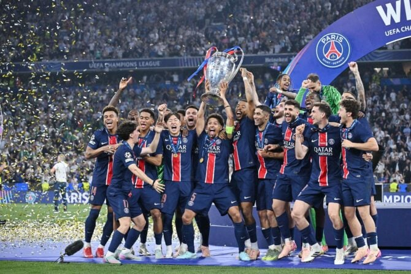

Champions-League-Finale 2025
Die UEFA Champions League, ursprünglich als Europapokal der Landesmeister bekannt, wurde 1955 ins Leben gerufen. Die Idee war es, die besten Vereinsmannschaften Europas in einem einheitlichen Wettbewerb unter der Leitung der UEFA zusammenzubringen. Das Turnier entwickelte sich schnell zum prestigeträchtigsten Vereinswettbewerb des Kontinents. Ikonische Momente – wie das Traumtor von Zidane im Finale 2002 oder das legendäre Comeback von Manchester United 1999 – sind unvergessen. 1992 erhielt das Turnier seinen heutigen Namen und ist bis heute der Höhepunkt des europäischen Vereinsfußballs.
PSG vs Inter: Das große Finale der Champions League 2025
Hinter den Kulissen des großen Finales zwischen Paris Saint-Germain und Inter Mailand herrschte gespannte Erwartung. Der PSG strebte nach seinem ersten Champions-League-Titel, während die Inter ihre letzte Krönung von 2010 wiederholen wollte. Interessanterweise trafen diese beiden europäischen Giganten zuletzt 1997 in der Gruppenphase der Champions League aufeinander – mit jeweils einem Sieg pro Team. Auf dem Platz entwickelte sich ein taktisch geprägtes Duell: PSG setzte auf Schnelligkeit im Angriff, während Inter mit gewohnter Defensivstärke glänzte. Dieses Finale war mehr als nur ein Spiel – es war ein weiteres bedeutendes Kapitel in der Geschichte der Königsklasse.
Die Hymnen des Parc des Princes: Musik, die Gänsehaut erzeugt
Ein Spiel im Parc des Princes ohne Gesänge? Unvorstellbar! Klassiker wie „Who Said I Would“ von Phil Collins – die Einlaufhymne des PSG – oder der mitreißende Fangesang „Ô Ville Lumière“ bringen die Fans in Stimmung und sorgen für echte Gänsehautmomente. Die Musik und Gesänge der PSG-Fans sind tief mit der Geschichte und Leidenschaft des Clubs verbunden. Hier unten findest du eine Liste von Liedern und Chants, die im Stadion für unvergessliche Atmosphäre sorgen:
Unten findest du einige der ikonischsten Lieder, die von den Fans während der Spiele der UEFA Champions League und in nationalen Wettbewerben gesungen werden. Diese Gesänge spiegeln die einzigartige Leidenschaft jedes Vereins und seiner Anhänger auf der ganzen Welt wider:
- 1. You'll Never Walk Alone – Liverpool
- 2. Storia Di un Grande Amore – Juventus
- 3. Blue Moon – Manchester City
- 4. Manchester United Calypso – Manchester United
- 5. Hala Madrid – Real Madrid
- 6. North London Forever – Arsenal
- 7. I'm Forever Blowing Bubbles – West Ham
- 8. Cant del Barça – Barcelona
- 9. Stern des Südens – FC Bayern München
- 10. Himno Centenario - Sevilla
Trikots mit Charakter: Zeig, für wen dein Herz schlägt!
Ob Heim- oder Auswärtstrikot – die offiziellen Jerseys von PSG und Inter vereinen Tradition, Stil und moderne Designs. PSG begeistert mit seinem eleganten dunkelblauen Heimtrikot und dem markanten roten Streifen, während das Auswärtstrikot oft mit kreativen Farbakzenten überrascht. Auch Inter bleibt seiner klassischen blauen und schwarzen Streifen treu, bringt aber bei den Auswärtstrikots regelmäßig frische und mutige Designs ins Spiel. Ein Muss für echte Fans und Sammler!
Die Champions-League-Finalnacht: Emotion trifft Geschichte
Neben dem Spiel selbst ist auch das Drumherum eines Champions-League-Finales ein fester Bestandteil des Erlebnisses. Fans aus ganz Europa reisen an, singen ihre Vereinslieder, zeigen ihre Farben und verwandeln die Stadt in eine Bühne der Fußballkultur. Die Begegnung zwischen PSG und Inter Mailand ist mehr als nur ein Spiel – sie ist das Aufeinandertreffen von Tradition, Leidenschaft und dem Traum vom europäischen Thron. Ob du Fan eines der Teams bist oder einfach die Magie des Fußballs liebst, diese Nacht bleibt unvergesslich. Die Champions League schreibt Geschichten – und dies ist ein Kapitel, das in Erinnerung bleiben wird.
Willst du spannende Fakten über die UEFA Champions League erfahren?
- 🏆 1. Der Ursprung des Wettbewerbs Die Champions League begann 1955 unter dem Namen „Europapokal der Landesmeister“. Nur die nationalen Meister durften teilnehmen – heute ist der Wettbewerb offener, größer und glamouröser als je zuvor!
- 🌍 2. Internationale Vielfalt Mehr als 140 Clubs aus ganz Europa haben seit der Gründung an der Champions League teilgenommen. Nur wenige Vereine konnten den Titel mehrmals gewinnen – ein echtes Zeichen von Klasse und Ausdauer.
- 🎶 3. Die ikonische Hymne „Die Champions!“ – Kaum ein Fußballfan bekommt bei der offiziellen Hymne der Champions League keine Gänsehaut. Komponiert von Tony Britten, basiert sie auf Händels Werk und wird vor jedem Spiel gespielt.
- 💰 4. Das Geldspiel Die Champions League ist nicht nur sportlich bedeutend – sie ist auch wirtschaftlich enorm wichtig. Der Sieger 2025 wird voraussichtlich über 100 Millionen Euro an Prämien und Einnahmen kassieren!
- ⚽ 5. Die Rekordhalter Real Madrid ist mit 14 Titeln der unangefochtene Rekordchampion. Auf Platz zwei: der AC Mailand mit 7. Wird Inter Mailand bald wieder aufholen?
- 🔥 6. Dramatische Comebacks Die Champions League ist bekannt für legendäre Aufholjagden: Liverpool 2005 in Istanbul oder Barcelona gegen PSG 2017 (6:1) sind nur zwei der berühmtesten Beispiele.
- 👀 7. Über 400 Millionen Zuschauer Das Champions-League-Finale gehört zu den meistgesehenen Sportereignissen der Welt – mit mehr als 400 Millionen Zuschauern jährlich. Ein echtes globales Spektakel! 🌐
Das war’s! Ich hoffe, Ihnen hat unser Rückblick auf das Spiel zwischen Inter und PSG gefallen. Dieses denkwürdige Duell brachte die Fußballwelt zum Staunen und wird Fans beider Lager noch lange in Erinnerung bleiben.